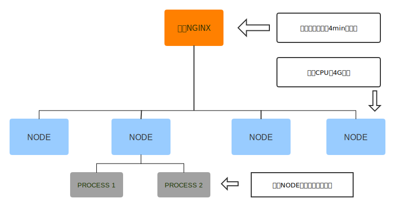

Node.js在回流页静态化中的应用
https://g.hz.netease.com/mf2e/assassins
项目背景
- 加快页面渲染速度
- 节约时间，利用现有代码
- SEO
项目架构

项目流程
- 开发： npm run dev
- 单元测试： npm test
- 测试（部署资源到测试服务器）： gulp test -w [type]
- 部署（前端静态资源）： npm run deploy [type]
- 部署（后端服务）： git push && 自动化部署系统
<<
内存占用
app.get('/auth', function (req, res) {
var username = req.query.username || '';
var password = req.query.password || '';
username = username.replace(/[!@#$%^&*]/g, '');
if (!username || !password || !users[username]) {
return res.sendStatus(400);
}
var hash = crypto.pbkdf2Sync(password, users[username].salt, 10000, 512);
if (users[username].hash.toString() === hash.toString()) {
res.sendStatus(200);
} else {
res.sendStatus(401);
}
});
node --prof app.js
ab -k -c 20 -n 250 "http://localhost:8080/auth?username=matt&password=password"
node --prof-process isolate-xxxxxx.log > processed.txt
>>
内存占用
[Summary]:
ticks total nonlib name
79 0.2% 0.2% JavaScript
36703 97.2% 99.2% C++
7 0.0% 0.0% GC
767 2.0% Shared libraries
215 0.6% Unaccounted
[C++]:
ticks total nonlib name
19557 51.8% 52.9% node::crypto::PBKDF2(v8::FunctionCallbackInfo const&)
4510 11.9% 12.2% _sha1_block_data_order
3165 8.4% 8.6% _malloc_zone_malloc
ticks parent name
19557 51.8% node::crypto::PBKDF2(v8::FunctionCallbackInfo const&)
19557 100.0% v8::internal::Builtins::~Builtins()
19557 100.0% LazyCompile: ~pbkdf2 crypto.js:557:16
4510 11.9% _sha1_block_data_order
4510 100.0% LazyCompile: *pbkdf2 crypto.js:557:16
4510 100.0% LazyCompile: *exports.pbkdf2Sync crypto.js:552:30
3165 8.4% _malloc_zone_malloc
3161 99.9% LazyCompile: *pbkdf2 crypto.js:557:16
3161 100.0% LazyCompile: *exports.pbkdf2Sync crypto.js:552:30
>>
DEBUG
-
node-inspector(v6.3.0以下)
node --debug app.js node-inspector // 提示访问 http://127.0.0.1:8080/?port=5858 -
Node.js本身支持(v6.3.0以上) + (chrome 55+)
node --inspect app.js // 提示访问 chrome-devtools://devtools/remote/serve_file/@60cd6e859b9f557d2312f5bf532f6aec5f284980/inspector.html?experiments=true&v8only=true&ws=localhost:9229/f9a8269c-04bc-4620-8558-06b26d65ed21 // 存在问题，每次重启服务器，地址都发生变化 /* 解决办法 更改chrome 启动方式，增加参数 --remote-debugging-targets=localhost:5858,9229 访问 chrome://inspect */
.svg)


公用代码
- 什么样的代码可以公用？ => 不依赖特定的环境 => 纯函数
-
使用场景
- 表单校验
- 服务端渲染（server render）
- 工具方法